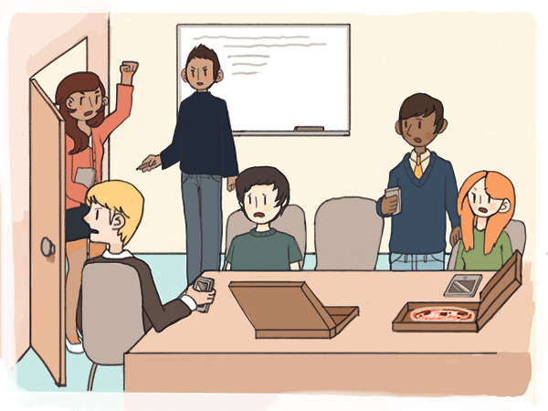

Software as Subversion
If creating great software takes very little capital, copying great software takes even less. This means dissent can be resolved in an interesting way that is impossible in the world of atoms. Under appropriately liberal intellectual property regimes, individuals can simply take a copy of the software and continue developing it independently. In software, this is called forking. Efforts can also combine forces, a process known as merging. Unlike the superficially similar process of spin-offs and mergers in business, forking and merging in software can be non-zero sum.

Where democratic processes would lead to gridlock and stalled development, conflicts under rough consensus and running code and release early, release often processes leads to competing, divergent paths of development that explore many possible worlds in parallel.
This approach to conflict resolution is so radically unfamiliar1 that it took nearly three decades even for pragmatic hackers to recognize forking as something to be encouraged. Twenty five years passed between the first use of the term "fork" in this sense (by Unix hacker Eric Altman in 1980) and the development of a tool that encouraged rather than discouraged it: git, developed by Linus Torvalds in 2005. Git is now the most widely used code management system in the world, and the basis for Github, the leading online code repository.
In software development, the model works so well that a nearly two-century old industrial model of work is being abandoned for one built around highly open collaboration, promiscuous forking and opt-in staffing of projects.

The dynamics of the model are most clearly visible in certain modern programming contests, such as the regular Matlab programming contests conducted by MathWorks.
Such events often allow contestants to frequently check their under-development code into a shared repository. In the early stages, such sharing allows for the rapid dissemination of the best design ideas through the contestant pool. Individuals effectively vote for the most promising ideas by appropriating them for their own designs, in effect forming temporary collaborations. Hoarding ideas or code tends to be counterproductive due to the likelihood that another contestant will stumble on the same idea, improve upon it in unexpected ways, or detect a flaw that allows it to "fail fast." But in the later stages, the process creates tricky competitive conditions, where speed of execution beats quality of ideas. Not surprisingly, the winner is often a contestant who makes a minor, last-minute tweak to the best submitted solution, with seconds to spare.
Such contests -- which exhibit in simplified forms the dynamics of the open-source community as well as practices inside leading companies -- not only display the power of RCRC and RERO, they demonstrate why promiscuous forking and open sharing lead to better overall outcomes.
Software that thrives in such environments has a peculiar characteristic: what computer scientist Richard Gabriel described as worse is better.2 Working code that prioritizes visible simplicity, catalyzing effective collaboration and rapid experimentation, tends to spread rapidly and unpredictably. Overwrought code that prioritizes authoritarian, purist concerns such as formal correctness, consistency, and completeness tends to die out.
In the real world, teams form through self-selection around great code written by one or two linchpin programmers rather than contest challenges. Team members typically know each other at least casually, which means product teams tend to grow to a few dozen at most. Programmers who fail to integrate well typically leave in short order. If they cannot or do not leave, they are often explicitly told to do nothing and stay out of the way, and actively shunned and cut out of the loop if they persist.
While the precise size of an optimal team is debatable, Jeff Bezos' two-pizza rule suggests that the number is no more than about a dozen.3
In stark contrast to the quality code developed by "worse is better" processes, software developed by teams of anonymous, interchangeable programmers, with bureaucratic top-down staffing, tends to be of terrible quality. Turning Gabriel's phrase around, such software represents a "better is worse" outcome: utopian visions that fail predictably in implementation, if they ever progress beyond vaporware at all.
The IBM OS/2 project of the early nineties,4 conceived as a replacement for the then-dominant operating system, MS-DOS, provides a perfect illustration of "better is worse." Each of the thousands of programmers involved was expected to design, write, debug, document, and support just 10 lines of code per day. Writing more than 10 lines was considered a sign of irresponsibility. Project estimates were arrived at by first estimating the number of lines of code in the finished project, dividing by the number of days allocated to the project, and then dividing by 10 to get the number of programmers to assign to the project. Needless to say, programmers were considered completely interchangeable. The nominal "planning" time required to complete a project could be arbitrarily halved at any time, by doubling the number of assigned engineers.5 At the same time, dozens of managers across the the company could withhold approval and hold back a release, a process ominously called "nonconcurrence."
"Worse is better" can be a significant culture shock to those used to industrial-era work processes. The most common complaint is that a few rapidly growing startups and open-source projects typically corner a huge share of the talent supply in a region at any given time, making it hard for other projects to grow. To add insult to injury, the process can at times seem to over-feed the most capricious and silly projects while starving projects that seem more important. This process of the best talent unpredictably abandoning other efforts and swarming a few opportunities is a highly unforgiving one. It creates a few exceptional winning products and vast numbers of failed ones, leaving those with strong authoritarian opinions about "good" and "bad" technology deeply dissatisfied.
But not only does the model work, it creates vast amounts of new wealth through both technology startups and open-source projects. Today, its underlying concepts like rough consensus, pivot, fast failure, perpetual beta, promiscuous forking, opt-in and worse is better are carrying over to domains beyond software and regions beyond Silicon Valley. Wherever they spread, limiting authoritarian visions and purist ideologies retreat.
There are certainly risks with this approach, and it would be polyannish to deny them. The state of the Internet today is the sum of millions of pragmatic, expedient decisions made by hundreds of thousands of individuals delivering running code, all of which made sense at the time. These decisions undoubtedly contributed to the serious problems facing us today, ranging from the poor security of Internet protocols to the ones being debated around Net Neutrality. But arguably, had the pragmatic approach not prevailed, the Internet would not have evolved significantly beyond the original ARPANET at all. Instead of a thriving Internet economy that promises to revitalize the old economy, the world at large might have followed the Japanese down the dead-end purist path of fifth-generation mainframe computing.
Today, moreover, several solutions to such serious legacy problems are being pursued, such as blockchain technology (the software basis for cryptocurrencies like Bitcoin). These are vastly more creative than solutions that were debated in the early days of the Internet, and reflect an understanding of problems that have actually been encountered, rather than the limiting anxieties of authoritarian high-modernist visions. More importantly, they validate early decisions to resist premature optimization and leave as much creative room for future innovators as possible. Of course, if emerging solutions succeed, more lurking problems will surface that will in turn need to be solved, in the continuing pragmatic tradition of perpetual beta.
Our account of the nature of software ought to suggest an obvious conclusion: it is a deeply subversive force. For those caught on the wrong side of this force, being on the receiving end of Blitzkrieg operations by a high-functioning agile software team can feel like mounting zemblanity: a sense of inevitable doom.
This process has by now occurred often enough, that a general sense of zemblanity has overcome the traditional economy at large. Every aggressively growing startup seems like a special-forces team with an occupying army of job-eating machine-learning programs and robots following close behind.
Internally, the software-eaten economy is even more driven by disruption: the time it takes for a disruptor to become a disruptee has been radically shrinking in the last decade -- and startups today are highly aware of that risk. That awareness helps explain the raw aggressiveness that they exhibit.
It is understandable that to people in the traditional economy, software eating the world sounds like a relentless war between technology and humanity.
But exactly the opposite is the case. Technological progress, unlike war or Wall Street style high finance, is not a zero-sum game, and that makes all the difference. The Promethean force of technology is today, and always has been, the force that has rescued humanity from its worst problems just when it seemed impossible to avert civilizational collapse. With every single technological advance, from the invention of writing to the invention of television, those who have failed to appreciate the non-zero-sum nature of technological evolution have prophesied doom and been proven wrong. Every time, they have made some version of the argument: this time it is different, and been proven wrong.
Instead of enduring civilizational collapse, humanity has instead ascended to a new level of well-being and prosperity each time.
Of course, this poor record of predicting collapses is not by itself proof that it is no different this time. There is no necessary reason the future has to be like the past. There is no fundamental reason our modern globalized society is uniquely immune to the sorts of game-ending catastrophes that led to the fall of the Roman empire or the Mayan civilization. The case for continued progress must be made anew with each technological advance, and new concerns, such as climate change today, must be seriously considered.
But concerns that the game might end should not lead us to limit ourselves to what philosopher James Carse6 called finite game views of the world, based on "winning" and arriving at a changeless, pure and utopian state as a prize. As we will argue in the next essay, the appropriate mindset is what Carse called an infinite game view, based on the desire to continue playing the game in increasingly generative ways. From an infinite game perspective, software eating the world is in fact the best thing that can happen to the world.
[1] The idea of forking as a mechanism for dissent enabled by the zero-copying-cost (or equivalently, non-rivalrous) nature of software is closely related to the notion of exit in Albert O. Hirschman's well-known model of dissent as an exit-versus-voice choice. One way to understand the nature of software is that it favors exit over voice as a means of expressing dissent. Beyond code-sharing, this has led, for instance, to the popularity of the law of two feet at informal unconferences in technology, where the social norm is leave talks and sessions that you are not interested in, rather than staying merely to be polite to the speaker. The idea that exit might be becoming a better option for dissent in a broader political sense, suggested by Balaji Srinvasan in a 2013 talk, sparked a furore among mainstream political commentators who read secessionist sentiments and abdication of responsibilities into the idea. As Balaji and others have pointed out since, there is no such necessary association. Software opens up creative possibilities for exit-as-default governance models, such as Bruno Frey's notion of Functional, Overlapping, Competing Jurisdictions (FOCJ), or ideas like charter cities which envision city-level equivalents of the law of two feet. Exit models can also be "soft", involving dissenting behaviors expressed via choice of virtual contexts. At a more mundane level, exit-driven political dissent is already a major economic phenomenon. The idea of regulatory arbitrage -- individuals and corporations moving across borders to take advantage of friendlier political regimes -- is already a reality within nations. Given the ongoing experimentation with clever new notions of citizenship, such as the e-citizenship initiative in Estonia, these dynamics an only strengthen.
[2] The phrase worse is better has had a colorful history since Gabriel coined it in a 1989 essay. Gabriel initially intended it only as half-serious sardonic commentary on an emerging trend in programming rather than a value judgment. Criticism and reconsideration led him to retreat from a casual endorsement of the idea in a follow-on pseudonymously authored article titled Worse is Better is Worse. The story gets more complicated from there on and it is worth reading it in his own words. The end result for Gabriel personally appears to have been decisive ambivalence. In the software industry, however, the phrase has acquired a colorful and polarizing life of its own. For pragmatists, it has become a statement of a powerful principle and operating truth. For purists, it has become a constant lament.
[3] See the 2011 Wall Street Journal profile of Jeff Bezos, Birth of a Salesman for one reference to the two-pizza rule. The idea has been part of technology industry folklore for much longer, however.
[4] This description is based on discussions with Marc Andreessen's about his recollections of working at IBM in the early nineties.
[5] By 1975 was already well known that adding programmers to a delayed project delays it further (a principle known as Brooks’ Law). See The Mythical Man Month by Frederick Brooks. The principle ironically, emerged from an IBM project.
[6] James Carse's dense blend of poetry and metaphysics in Finite and Infinite Games is not, strictly speaking, of much direct relevance to the ideas in these essays. But for philosophically inclined readers, it probably provides the most thorough philosophical case for pragmatic over purist approaches, the hacker ethos over the credentialist ethos, and the Promethean aesthetic over the pastoral aesthetic.